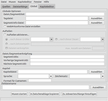

MKVToolNix
Dieser Artikel wurde für die folgenden Ubuntu-Versionen getestet:
Ubuntu 16.04 Xenial Xerus
Ubuntu 14.04 Trusty Tahr
Zum Verständnis dieses Artikels sind folgende Seiten hilfreich:
MKVToolNix  stellt eine Reihe von Werkzeugen bereit, um Dateien im freien Containerformat Matroska zu erzeugen, zu ändern oder zu untersuchen. Der Matroska Multimedia Container ist ein offenes und freies Container-Format. Die Besonderheit ist, dass er eine unbegrenzte Anzahl von Audio-, Video- und/oder Untertitelspuren in einer einzigen Datei beherbergen kann. Es werden eine Vielzahl von Codecs unterstützt.
stellt eine Reihe von Werkzeugen bereit, um Dateien im freien Containerformat Matroska zu erzeugen, zu ändern oder zu untersuchen. Der Matroska Multimedia Container ist ein offenes und freies Container-Format. Die Besonderheit ist, dass er eine unbegrenzte Anzahl von Audio-, Video- und/oder Untertitelspuren in einer einzigen Datei beherbergen kann. Es werden eine Vielzahl von Codecs unterstützt.
Die Einzelprogramme sind unter der Lizenz GNU GPL v3 veröffentlicht. Die Kernbibliotheken stehen unter der GNU LGPL, der Parser unter der BSD-Lizenz. Beide stammen aus dem Projekt Matroska. Weitere Programme desselben Projekts sind MKvalidator und MKclean
Eine Alternative zur Erstellung von MKV-Containern kann Avidemux ab Version 2.6 sein, obwohl Avidemux keine Fehlermeldungen ausgibt und MKVToolNix mehr Einstellungen anbietet.
Hinweis:
Die hier genannten Werkzeuge arbeiten grundsätzlich verlustfrei, denn Matroska ist kein Codec, sondern ein Containerformat.
Installation¶
 Die Installation aus den offiziellen Paketquellen erfolgt über die folgenden Pakete [1]:
Die Installation aus den offiziellen Paketquellen erfolgt über die folgenden Pakete [1]:
mkvtoolnix (universe, Kommandozeilenwerkzeuge)
mkvtoolnix-gui (universe, grafische Oberfläche)
 mit apturl
mit apturl
Paketliste zum Kopieren:
sudo apt-get install mkvtoolnix mkvtoolnix-gui
sudo aptitude install mkvtoolnix mkvtoolnix-gui
Fremdquelle¶
Aktuelle Programmversionen kann man aus der Paketquelle der Entwickler beziehen.
Um aus der Fremdquelle zu installieren, muss man die folgenden Paketquellen freischalten:
Hinweis!
Zusätzliche Fremdquellen können das System gefährden.
deb http://mkvtoolnix.download/ubuntu/UBUNTU_VERSION/ ./
Beispiel für Ubuntu 14.04:
deb http://mkvtoolnix.download/ubuntu/trusty/ ./
Um die Fremdquelle zu authentifizieren, kann man
entweder den Signierungsschlüssel herunterladen  und in der Paketverwaltung hinzufügen oder folgenden Befehl ausführen:
und in der Paketverwaltung hinzufügen oder folgenden Befehl ausführen:
wget -q https://mkvtoolnix.download/gpg-pub-moritzbunkus.txt -O- | sudo apt-key add -
Nach dem Aktualisieren der Paketquellen erfolgt die Installation wie oben angegeben.
Bedienung¶
Die einzelnen Programme liegen als Kommandozeilenwerkzeuge vor, was den Vorteil bietet, diese automatisiert in Shell-Skripten einsetzen zu können. Die Erstellung dagegen kann alternativ auch über eine grafische Oberfläche (GUI) durchgeführt werden. Bei Ubuntu-Varianten mit einem Anwendungsmenü gibt es nach der Installation zwei Einträge [2], und zwar:
"Multimedia -> MKV Dateien erstellen (mkvmerge GUI)" und
"Multimedia -> Informationen über MKV-Dateien anzeigen (mkvinfo)"
Möchte man die Kommandozeile nutzen, stehen vier unterschiedliche Befehle im Terminal [3] zur Verfügung. Ein Fünfter dient zum Start der grafischen Oberfläche "mkvmerge GUI".
| Welches Werkzeug macht was? | |
| Anwendung | Beschreibung |
| mkvmerge | Dateien in einem Container zusammenfassen |
| mkvextract | Video-, Audio-, Untertitel-Dateien usw. aus dem Container herauslösen (verlustfrei!) |
| mkvpropedit | Eigenschaften editieren |
| mkvinfo | Informationen zum Container auslesen |
| mmg | ruft die grafische Oberfläche zu mkvmerge aus der Kommandozeile auf |
Etwas verwirrend ist, dass mkvinfo in zwei Fassungen vorhanden ist: mit und ohne grafische Oberfläche. Erstere steht automatisch zur Verfügung, wenn das Paket mkvtoolnix-gui installiert wird.
mkvmerge GUI¶
Dieses grafische Programm macht die Erstellung einfach. Prinzipiell muss man nur zwei Spuren (in Form einer Video- und einer Audiodatei) als Quelldateien und eine Ausgabedatei angeben. Das Erstellen einer Matroska-Datei erfolgt über die Schaltfläche "Muxen starten". Eine andere Variante ist die Umwandlung einer bestehenden Container-Datei in das Matroska-Format.
Wer tiefer in die Materie einsteigen will, dem stehen etliche Optionen zur Verfügung, um das Endergebnis an die gewünschten Eigenschaften anzupassen.
| Quellen |
| Dateianhänge |
|  |
| Globale Optionen |
| Kapiteleditor |
Weitere Informationen sind in der Dokumentation zu mkvmerge GUI enthalten.
Kommandozeilenwerkzeuge¶
Die Verwendung auf der Kommandozeile wird unter Umständen leichter, wenn man -h oder --help an den jeweiligen Befehl anhängt, um eine englische Erklärung zu erhalten.
mkvmerge¶
Das Gegenstück zu "mkvmerge GUI". Die grundsätzliche Syntax lautet:
mkvmerge OPTIONEN DATEI
Drei praktische Beispiele:
Eine Videodatei mit Musik unterlegen:
mkvmerge -o VIDEO_MIT_TON.mkv -A VIDEO_OHNE_TON.mkv TONSPUR.mp3
Eine bestehende AVI-Video-Sammlung in das Matroska-Format umwandeln:
for i in *.avi; do mkvmerge -o `basename $i .avi`.mkv --language 1:eng $i ; done
Funktioniert u.a. auch mit MP4, MPEG, FLV und OGM, aber nicht mit WMV.
Um eine bestehende AVI-Datei mit Kapiteleinträgen zu versehen und zu konvertieren, braucht man zuerst eine Datei chapters.txt. Beispielinhalt:
CHAPTER01=00:00:00.000 CHAPTER01NAME=Chapter 01 CHAPTER02=00:05:00.000 CHAPTER02NAME=Chapter 02 CHAPTER03=00:10:00.000 CHAPTER03NAME=Chapter 03 CHAPTER04=00:15:00.000 CHAPTER04NAME=Chapter 04 CHAPTER05=00:20:00.000 CHAPTER05NAME=Chapter 05
Dann kann man mit folgendem Befehl die Ursprungsdatei umwandeln:
mkvmerge VIDEO.avi --default-language de --compression -1:none --chapters chapters.txt -o VIDEO.mkv
Weitere Informationen sind in der Manpage und in der Dokumentation zu mkvmerge enthalten.
mkvextract¶
Wie der Name schon sagt, kann man mit diesem Werkzeug eine oder mehrere der im Container enthaltenen Dateien herauslösen. Die grundsätzliche Syntax lautet:
mkvextract OPTIONEN DATEI
Als Beispiel ein Befehl, um sowohl die Video- als auch die Tonspur eines Matroska-Containers zu extrahieren. Voraussetzung sind Kenntnisse der internen Struktur des Containers, die sich mit mkvinfo ermitteln lassen.
mkvextract tracks VIDEO.mkv 1:VIDEO.mpv 2:VIDEO.ac3
Weitere Informationen sind in der Manpage und in der Dokumentation zu mkvextract enthalten.
mkvpropedit¶
Das Matroska-Format bietet mit der Einbindung von Metadaten die Möglichkeit, eine Videosammlung katalogisierbar zu machen. Zum besseren Verständnis muss angemerkt werden, dass ein Matroska-Container – neben dem Titel und den Sprachen von Audiospuren und Untertiteln – keine weiteren Felder für Metadaten enthält. Stattdessen werden XML-Dateien verwendet, die in den Container eingebunden werden. Dadurch wird der Umgang mit Metadaten leider etwas erschwert (siehe Matroska and the State of Movie Metadata , 09/2013).
Zum Bearbeiten dient mkvpropedit. Die grundsätzliche Syntax lautet:
mkvpropedit OPTIONEN DATEI
Beispiele:
Titel setzen:
mkvpropedit --edit info --set title="Titel des Videos" VIDEO.mkv
Sprache der 1. Tonspur setzen (auch hier sind Kenntnisse der internen Struktur erforderlich):
mkvpropedit --edit track:a1 --set language=ger VIDEO.mkv
Alle Metadaten entfernen:
mkvpropedit VIDEO.mkv --tags all:
Weitere Informationen sind in der Manpage und in der Dokumentation zu mkvpropedit enthalten. Mit JMkvpropedit (siehe unten) steht alternativ eine grafische Oberfläche zur Verfügung, die auf Java basiert und damit plattformübergreifend genutzt werden kann.
mkvinfo¶
Mkvinfo dient in erster Linie dazu, um Informationen über die Inhalte einer MKV-Containerdatei auszulesen und ist als eigenständige grafische Version über das Anwendungsmenü aufrufbar. Es kann bei etwas besserer Kenntnis der Materie auch zur Kontrolle der eigenen Arbeitsweise dienen.
mkvinfo -g DATEI
Möchte man stattdessen die Kommandozeilenversion nutzen, lautet die Befehl:
mkvinfo [OPTIONEN] DATEI
Weitere Informationen über die möglichen Optionen sind der Manpage und der Dokumentation zu mkvinfo zu entnehmen.
Hinweis:
Der Befehl:
mkvmerge -i DATEI.mkv
liefert Kurzinformationen über einen Matroska-Container.
Problembehebung¶
Hilfe-Funktion¶
Die integrierte Hilfe der grafischen Benutzeroberfläche über F1 enthält eine sehr ausführliche Hilfe-Datei. Diese liegt z.Zt. nur in englisch, spanisch und chinesisch vor. Wem das Darstellungsfenster zu klein vorkommt, kann die Hilfe auch direkt aufrufen. Dazu im Browser die Datei /usr/share/doc/mkvtoolnix-gui/guide/en/mkvmerge-gui.html aufrufen und für die spätere Verwendung ein Lesezeichen anlegen.
Links¶
 - Übersichtsartikel
- ÜbersichtsartikelExtern¶
Blog
- Neuigkeiten
Matroska Test Suite
- BeispieldateienBeispielanleitungen:
O Matroska: mkv-Dateien schneiden, zusammensetzen und demuxen
 - Blogbeitrag, 11/2013
- Blogbeitrag, 11/2013
MKVToolnix - franz. Ubuntu-Wiki
MKV_Extraktor_Gui - grafische Oberfläche für mkvextract (PPA verfügbar)
JMkvpropedit
- grafische Oberfläche (Bilder ) für mkvpropedit, benötigt Java
- Erstellt mit Inyoka
-
 2004 – 2017 ubuntuusers.de • Einige Rechte vorbehalten
2004 – 2017 ubuntuusers.de • Einige Rechte vorbehalten
Lizenz • Kontakt • Datenschutz • Impressum • Serverstatus -
Serverhousing gespendet von